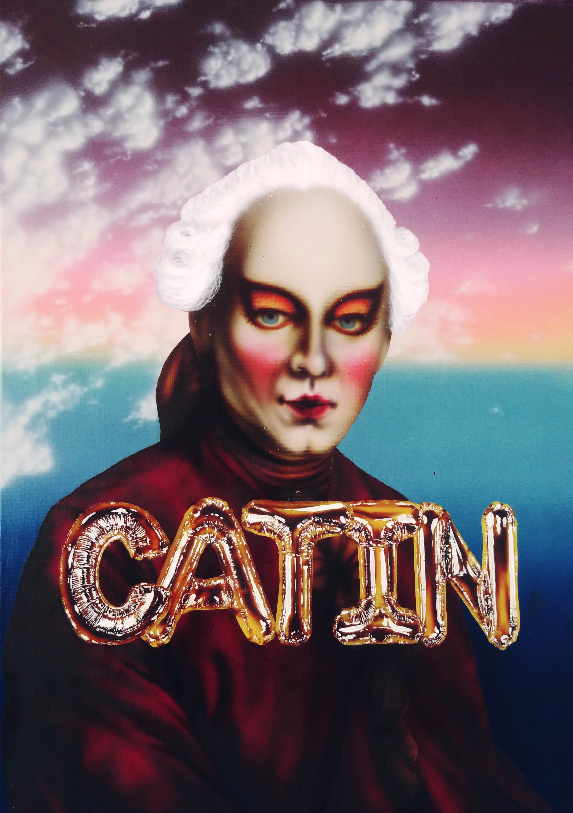

La Catin
Camille Theodet
Acrylic on Canvas
70 x 50
“My work is always influenced by the classical and religious paintings of art history.
By creating a juxtaposition between past and present, I propose a sarcastic and provocative vision of what was considered appropriate, sacred and beautiful in art history, and create new stories from what has existed. This can be the merge of different pieces from different artists, or simply adding a few details that can change the whole meaning of the piece. I am mixing a classical style of painting with modern codes and techniques, to explore subjects such as religion, feminism, maternity and the human vices.”